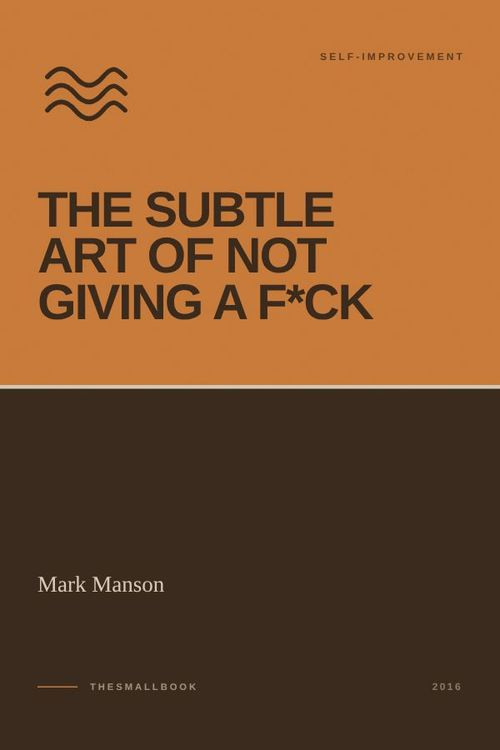

Library › Ask the Library › How do I handle rejection?
How do I handle rejection?
The short answer
Rejection is data about fit, not a verdict on your worth. Separate the two: your effort was real, their 'no' was a match problem. Process the sting for a day, extract one lesson, and re-enter with a better pitch, persistence plus adjustment beats talent plus pride.
The books behind the answer

The Subtle Art of Not Giving a F*ck
Mark Manson · 2016 · 9 min · 7 lessons
The desire for more positive experience is itself a negative experience. Choose your struggles instead of avoiding them.
- Choose Better Values: If your worth rides on every yes, you've outsourced your self-esteem.

Grit
Angela Duckworth · 2016 · 8 min · 6 lessons
Talent × effort = skill. Skill × effort = achievement. Effort counts twice - and grit, not genius, predicts who finishes.
- Effort Counts Twice: Talent × effort = skill; skill × effort = achievement. The second effort is yours alone.
Originals
Adam Grant · 2016 · 8 min · 6 lessons
Originality is not a personality - it's a set of habits. And procrastinators, doubters and troublemakers often have the edge.
- Quit When It's Right, Not When It's Hard: Know the difference between a rejection you learn from and a dead end.
Questions people ask next
Can I read this in Hindi?
Yes. This answer is written in simple English. Open any linked book and choose Hindi or Hinglish to read the full lessons in your language, with audio where available.